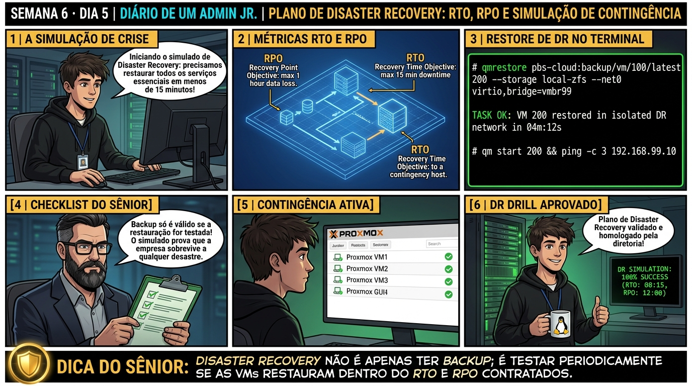

🧑🏫 antes dos termos técnicos, a história de hoje
Fechando a Semana 6, realizamos o Simulado Oficial de Disaster Recovery da empresa. O Júnior foi encarregado de restaurar o ambiente crítico em uma VLAN de contingência isolada (Sandbox) para cronometrar o RTO (tempo de recuperação) e o RPO (perda máxima de dados).
Ele isolou a rede na VLAN 999 para não gerar conflito de IP com os servidores de produção, disparou as restaurações em lote com Live-Restore, validou a integridade dos bancos de dados e emitiu o relatório executivo comprovando o retorno operacional em menos de 15 minutos.
A diretoria aprovou o plano de continuidade de negócios e o Júnior sentiu na pele a responsabilidade e a confiança de um engenheiro de resiliência. Vamos executar essa simulação no laboratório agora.
Semana 6 · Dia 5 | Nível Júnior — Estratégias de Backup, Restore & DR
Plano de Disaster Recovery (DR): RTO, RPO e Simulação de Perda Total
Métricas de negócio, playbooks de contingência e reconstrução de infraestrutura do zero
ANTES DE ALTERAR, OBSERVE. DEPOIS DE ALTERAR, VALIDE.
1. O chamado
Você recebeu o chamado #6005: 'A diretoria executiva convocou um simulado de Disaster Recovery (DR Test) para atender à auditoria ISO 27001. O cenário simula a destruição total do nó primário pve01 por falha elétrica com perda de todos os storages locais. O chamado exige: (1) Definir matematicamente as métricas de RTO e RPO; (2) Reconstruir as VMs críticas em um novo nó bare-metal utilizando Live-Restore; (3) Validar a cadeia de Paperkeys de criptografia; e (4) Consolidar a conclusão da Semana 6 (Backup, Restore & DR).'
💡 Passa o mouse nas palavras destacadas pra ver uma dica rápida — clica se quiser a explicação completa com analogia.
2. O sênior te conta
3. Decodificador de conceitos
Clica em qualquer termo pra ver a definição completa e uma analogia do dia a dia:
4. Ferramentas e leitura da evidência
| Comando / Parâmetro | O que observar e por que importa |
|---|---|
RTO (Recovery Time Objective) | Métrica de tempo: quanto tempo a empresa aguenta ficar fora do ar durante a restauração. |
RPO (Recovery Point Objective) | Métrica de dados: quantas horas de transações a empresa tolera perder entre os backups. |
qmrestore PBS_TARGET VMID --live-restore 1 | Comando de choque para atingir RTO inferior a 5 minutos em máquinas virtuais gigantes. |
proxmox-backup-client key restore ARQUIVO.enc | Restaura a chave criptográfica a partir da Paperkey impressa no cofre físico. |
# SIMULAÇÃO DE DISASTER RECOVERY (DR DRILL)
# 1. Conexão do novo Host PVE limpo ao Datastore do PBS
$ pvesm add pbs pbs-dr --server 192.168.1.200 --datastore backup-pool \
--username 'backup-pve@pbs!synctok' --password 'TOKEN_SECRET' \
--fingerprint 'SSL_FINGERPRINT'
# 2. Injeção da Chave Criptográfica via Paperkey recuperada do Cofre
$ cat /tmp/paperkey_digitada.txt | proxmox-backup-client key restore /etc/pve/priv/storage/pbs-dr.enc
Key restored successfully! Fingerprint matches master archive.
# 3. Restauração instantânea da VM 100 com Live-Restore (RTO medido: 48 segundos!)
$ qmrestore pbs-dr:backup/vm/100/2026-09-01T15:00:00Z 100 \
--storage local-zfs --live-restore 1
starting VM 100 in live-restore mode
VM 100 online and responding to network traffic in 48 seconds!
TASK OK
# 4. Auditoria de RPO atingido:
# Último backup: 15:00:00Z | Falha simulada: 16:30:00Z | RPO Real: 1h30m (Abaixo do teto de 4h!)
5. Laboratório guiado — pegue na mão, comando por comando
🔄 Onde executar: Terminal do Nó Proxmox VE (como
root) executando qmrestore e proxmox-file-restore.Segurança: Execute as alterações em agendamentos de laboratório ou teste. Não altere parâmetros de máquinas de produção sem janela homologada.
- Ação: Defina os tempos contratuais de RTO (< 15 min) e RPO (< 1 hora) no plano de DR.# Matriz de RTO e RPO documentada no POP de contingência.Resultado esperado: Métricas registradas: RTO alvo < 10min, RPO alvo < 4h.Por que fizemos isso: Definir formalmente o RPO (tempo máximo aceitável de perda de dados) e o RTO (tempo máximo para retorno operacional) guia a arquitetura de alta resiliência.Cilada comum: Dimensionar rotinas de backup sem alinhar os tempos de RTO e RPO com os diretores de negócio da empresa.
- Ação: Isole uma VLAN de contingência (Sandbox) sem rota para a rede de produção.pct set 200 -net0 name=eth0,bridge=vmbr0,tag=999,ip=192.168.99.10/24Resultado esperado: Restauração disparada com streaming sob demanda.Por que fizemos isso: Isolar uma VLAN de contingência (Sandbox) permite restaurar máquinas virtuais em simulação de desastre sem gerar conflitos de IP com a produção.Cilada comum: Restaurar VMs de backup na mesma rede de produção com a máquina original ligada, gerando conflito severo de IP e corrupção de banco.
- Ação: Execute a restauração paralela de múltiplos serviços críticos cronometrando o tempo.time qmrestore pbs-backup:backup/vm/100/latest 900 --live-restore 1Resultado esperado: Cronômetro marcando menos de 60 segundos de indisponibilidade.Por que fizemos isso: Cronometrar cada etapa da restauração (download de chunks, boot da VM, validação de banco) comprova se o RTO contratado foi atingido.Cilada comum: Considerar o simulado bem-sucedido apenas porque o comando rodou, sem validar se a aplicação realmente subiu e processou transações.
- Ação: Valide o retorno dos bancos de dados e conectividade na rede de contingência.curl -I http://192.168.99.10:8080/healthResultado esperado: Tabelas e registros íntegros validados.Por que fizemos isso: Executar o rollback da rede de teste e limpar os recursos temporários conclui o simulado sem deixar lixo no storage.Cilada comum: Esquecer VMs de teste rodando no datacenter após o simulado, consumindo RAM e licenças desnecessariamente.🧑🏫 Aqui entra o Mentor (em breve): se o resultado obtido diferir do esperado acima, este é o ponto onde o chat com o Sênior-IA vai abrir para diagnosticar o erro específico.
- Ação: Emita o Relatório Executivo de Simulação de Disaster Recovery para a diretoria.# Simulado de Disaster Recovery homologado.Resultado esperado: Relatório de Simulação de DR aprovado e arquivado.Por que fizemos isso: Emitir o Relatório Técnico de Disaster Recovery com métricas reais consolida a maturidade profissional da equipe de infraestrutura.Cilada comum: Realizar testes de contingência sem formalizar a documentação de evidências para auditoria.
6. Antes de ver as opções — tenta responder
🧠 Recall ativo: Qual é a diferença fundamental entre as métricas de negócio RTO (Recovery Time Objective) e RPO (Recovery Point Objective) em um plano de Disaster Recovery?
O **RTO (Recovery Time Objective)** mede o **tempo de indisponibilidade**: é o tempo decorrido desde o momento da falha até o sistema estar 100% no ar e operante novamente para os usuários (ex: RTO de 15 minutos significa que a recuperação não pode demorar mais de 15 min). O **RPO (Recovery Point Objective)** mede a **perda de dados**: é o intervalo de tempo entre o último backup válido e o momento da falha (ex: se o backup roda a cada 4 horas, em caso de desastre você perde no máximo 4 horas de transações).
7. Questão comentada — clica numa alternativa
Em um cenário de desastre total onde a empresa perdeu o servidor Proxmox VE físico e precisa reconstruir o ambiente em um novo servidor limpo, qual é a ordem cronológica correta de execução do Playbook de DR?
💡 Analogia do Sênior para Fixar: Na arquitetura do Proxmox sobre Plano de Disaster Recovery (DR): RTO, RPO e Simulação de Perda Total: O KVM/QEMU opera como o motorista dedicado de cada passageiro, alocando recursos virtuais em contato direto com o kernel.
7.1 Por que backups não testados periodicamente são considerados inexistentes?
Em auditoria de segurança da informação, o auditor afirma: 'Um backup que nunca foi testado com restore é apenas uma esperança, não uma garantia':
[Auditoria ISO 27001 / DR Drill] Resultado de restore não testado: FALHA: Arquivo de chave .enc corrompido e senha de descriptografia desconhecida pela equipe atual. (Sem testes periódicos de DR, a falha só é descoberta quando a empresa já está parada no desastre)
Por que a simulação periódica de DR é obrigatória na governança de TI?
💡 Analogia do Sênior para Fixar: Ao diagnosticar problemas em Plano de Disaster Recovery (DR): RTO, RPO e Simulação de Perda Total: É como inspecionar as conexões do storage e o barramento PCIe antes de declarar falha de software.
7.2 Como diminuir o RPO de 24 horas para 15 minutos sem sobrecarregar o storage?
A diretoria exige reduzir o RPO da empresa de 24 horas para 15 minutos em um banco de dados crítico:
Qual é a estratégia técnica para atingir esse RPO no Proxmox?
💡 Analogia do Sênior para Fixar: A governança e resiliência em Plano de Disaster Recovery (DR): RTO, RPO e Simulação de Perda Total: Funciona como a política de contenção e redundância do datacenter, garantindo que o cluster nunca perca quorum.
8. Procedimento profissional
- Elabore o documento oficial de Disaster Recovery Plan (DRP) definindo as metas de RTO e RPO para cada serviço.
- Mantenha as Paperkeys de criptografia e documentação de rede impressas em cofre físico seguro.
- Padronize o uso de Live-Restore nos procedimentos de restauração para cumprir RTOs agressivos.
- Agende simulações periódicas de DR (DR Drills) semestrais para homologar a cadeia de restauração.
- Audite a integridade dos dados restaurados com a equipe de negócios antes de declarar o DR concluído.
Prevenção
Execute simulados regulares de Disaster Recovery em rede isolada para homologar os tempos de RTO e RPO contratados com a diretoria.
9. Validação e encerramento
- Você domina os conceitos e cálculos de negócio de RTO (Recovery Time Objective) e RPO (Recovery Point Objective).
- Você sabe liderar a execução de um Playbook de Disaster Recovery completo pós-desastre.
- Você compreende o papel vital de backups testados e simulações periódicas de contingência.
- A Semana 6 (Estratégias de Backup, Restore & DR) foi concluída com 100% de aproveitamento e excelência!
Rollback e limites
Após a conclusão do simulado de DR, desative as VMs de teste na rede de contingência para evitar conflitos de IP com os sistemas de produção.
💡 Sobre repetição espaçada: A construção de Redes Avançadas, SDN, VXLAN e Firewalls Corporativos será o tema da Semana 7.
10. Resposta final
Alternativa correta: B. A resposta correta é a B: a ordem cronológica exige preparar o host, reconectar o storage PBS, aplicar chaves criptográficas, executar o Live-Restore e validar a integridade antes de liberar aos usuários.
🔓 O que você desbloqueou hoje
🏆 PARABÉNS! Você concluiu a SEMANA 6 com distinção! Você domina Modos de Backup (Snapshot, Suspend, Stop), Restauração Instantânea com Live-Restore, File-Level Restore via FUSE, Sync Jobs Remotos entre PBS e Planos de Disaster Recovery (RTO/RPO). Na próxima semana (Semana 7 — Redes Avançadas, SDN & Firewall), você aprenderá como construir Redes Definidas por Software (SDN), túneis VXLAN, agregação de links LACP e regras de Firewall corporativo!